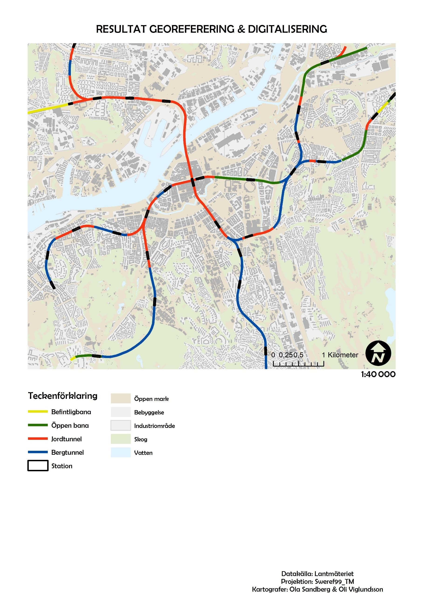
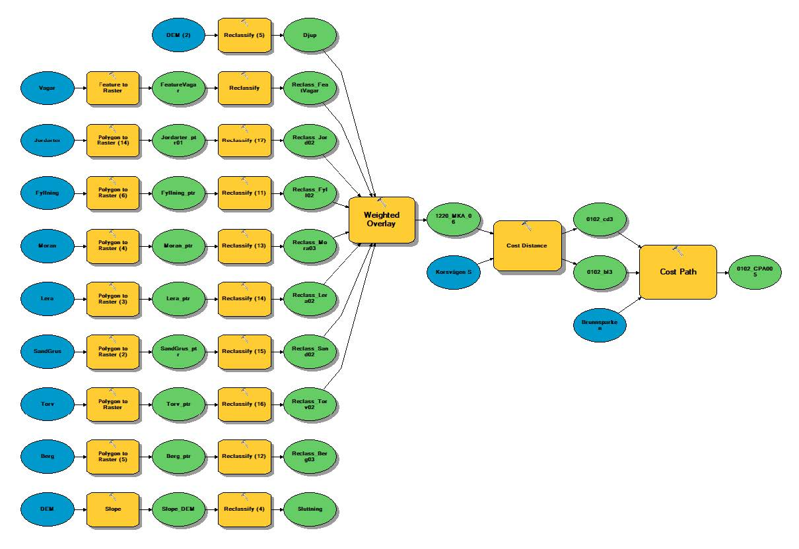
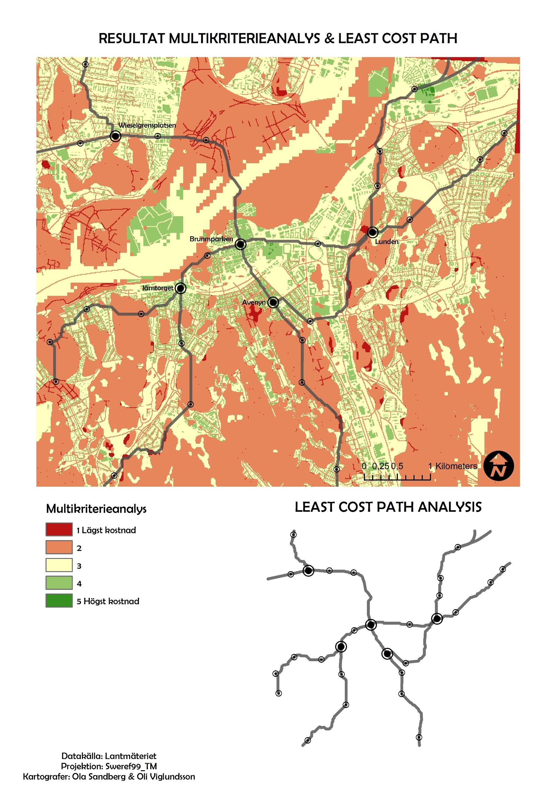
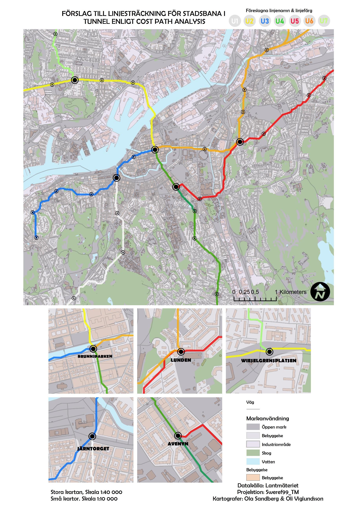

Tunnelseende i Göteborg
Tunnelseende i Göteborg ("Tunnelvision in Gothenburg") is the name of this project which me and my back then studybuddy Ola Sandberg created back in late 2019.
Project Details / Background
In the 1960s, there were plans to build a city rail line / express tramway in tunnels under central Gothenburg. The plans are presented in the Express Tramway Investigation from 1967. The investigation includes, among other things, geological surveys and conditions for this project, as well as maps with planned route lines and stations.
Drawing inspiration from the Express Tramway Investigation and the tunnel routes proposed in the investigation, there was a curious need to review a suitable analysis tool that could support or find alternative solutions to these routes. The starting points are the station locations proposed in the investigation. The analysis has been done from station to station using a "Cost Path Analysis" based on a number of parameters such as: 'depth of soil', 'soil type', 'road network', and 'buildings'.

This was the result of the georeferenced and digitized map at a scale of 1:40,000. The type of tunnel/track is visualized with each having a distinct color: rock tunnel in blue, soil tunnel in red, existing express tramway in green, and open track in yellow. The purpose of the color scheme is to more clearly differentiate the various tunnel and track sections that the original map from 1967 has been divided into.

Here is the workflow that we built with model builder to perform the multicriteria analysis.

This map is a combination of two results in one map at a scale of 1:40,000, along with a slightly smaller separate overall map of the lines produced with "Cost Path Analysis." The multicriteria analysis takes up the most space and serves as a visual cost basis for where and how it is cheapest or most expensive to build tunnels according to all the collected criteria.

Here is a final visualization of all interventions and analyses conducted. It consists of an overview visualization of the network at a scale of 1:40,000, along with five smaller zoomed-in maps at a scale of 1:10,000 focusing on the branching stations in the network. The land use layer is slightly transparent even in this map to highlight the route lines. The route lines consist of 6 fictional subway lines originating from a couple of main stations in the network.
Follow this link to read the full report:
Tunnelseende i Göteborg